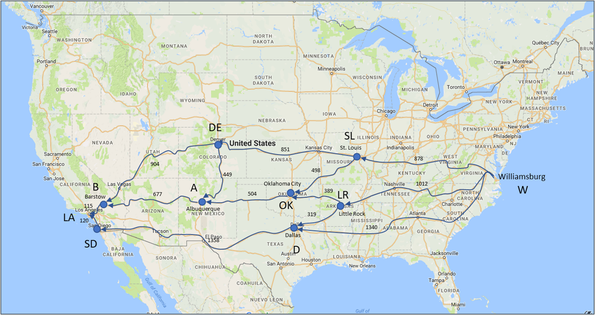
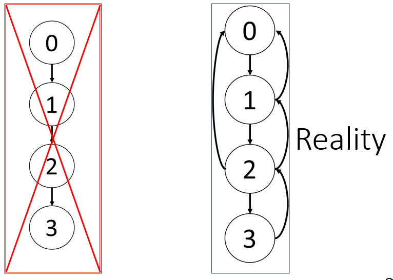

Algorithm Design and Pseudocode
Automate This by Christopher Steiner
- An algorithm is a set of operations (mathematical, technical) to be conducted in a certain sequence to achieve a certain goal.
- The rise of algorithms and their transformative impact on industries.
- Algorithms have gone from being a tool used by a few specialists to becoming a driving force in business, finance, healthcare, and more.
- Automation through algorithms is reshaping the world, with both positive and negative implications.
Algorithms Key Concepts and Examples
- Algorithms in Finance: High-Frequency Trading (HFT) revolutionized Wall Street by executing trades at lightning speeds, leading to both massive profits and new risks.
- Algorithms in Healthcare: Algorithms that diagnose diseases faster and more accurately than doctors.
- Music: Algorithms used by platforms like Pandora to predict and recommend songs.
- Impact on Jobs: Automation’s role in replacing jobs traditionally done by humans, particularly in industries like finance, journalism, and even art.
Future Implications and Ethical Considerations
- Expansion of Algorithms: The growing reach of algorithms in decision-making processes, from hiring practices to legal judgments.
- Ethical Concerns: The potential for bias in algorithms and the importance of transparency in their design. The need for regulation and oversight as algorithms increasingly influence critical aspects of life.
- Looking Ahead: Steiner’s call for society to adapt to the new algorithm-driven world, balancing innovation with ethical responsibility.
Bias in Algorithms Explored
- Facial Recognition Technology algorithms have shown significant biases, particularly in accurately identifying people of different races and genders.
- Studies have found that some facial recognition systems have higher error rates when identifying individuals with darker skin tones and women. This can lead to discriminatory outcomes, such as misidentifying people of color at higher rates than white individuals.
- Impact: This bias can result in wrongful accusations or the exclusion of certain groups from services that rely on facial recognition technology.
- Hiring algorithms are used by companies to screen job applicants, but they can unintentionally perpetuate biases present in the training data.
- A famous case involved an AI hiring tool developed by Amazon, which was found to be biased against female applicants. The algorithm was trained on resumes submitted over the previous decade, which were predominantly from male applicants, leading the AI to favor male candidates.
- Impact: This bias can reinforce gender inequalities in the workplace by systematically disadvantaging qualified female applicants.
- Predictive Policing algorithms analyze historical crime data to predict where future crimes are likely to occur, influencing law enforcement patrols.
- These algorithms often reflect existing biases in policing practices, such as disproportionately targeting minority neighborhoods. Because the training data may contain biased policing patterns, the algorithm can perpetuate over-policing in certain communities.
- Impact: This can lead to a cycle of increased surveillance and criminalization of specific racial or ethnic groups, reinforcing systemic biases in the criminal justice system.
How to Design an Algorithm:
- A Routing Problem: Find a good path from Williamsburg to Los Angeles

Algorithm Development Process:
What should you do first?
0: Think of a conceptual approach
1: Write step-by-step outline
- In words (maybe pseudo code)
- Focus on sound logic
2: Plan programming implementation
- Choose appropriate data structures + Speed, memory, convenience
- Consider functions, which kind of loops
3: Write the program and debug
- Use the outline as comment statements
- Write your algorithms in chunks, write a line, then test it

Understanding the Structure of Algorithms
- Identify the Purpose:
- Start by understanding what the algorithm is supposed to achieve.
- Look for a brief description or goal at the beginning.
- Break Down the Steps:
- Algorithms are typically presented as a sequence of steps.
- Each step corresponds to a specific action or decision.
- in words. Focus on sound logic.
- Recognize Input and Output:
- Determine what inputs the algorithm requires.
- Identify the expected output(s) after the algorithm is executed.
Understanding the Structure of Algorithms: Flow Control
- Determine how the algorithm progresses through its steps and notice the flow control structures like loops (for, while) and conditionals (if, else).
- Which data types should we use?
- Begin to consider speed, memory usage, convenience tradeoffs
- Finer details of data organization
- What fields for dictionary labels?
- How should lists be sorted, if at all?
- Loop types
- Should we use a for or while loop?
- How to we increase the ease of coding and development?
- Should we use functions?
- Which data types should we use?
Deciphering Algorithmic Notation
- Variables and Data Types:
- Identify variables and understand their roles (e.g., counters, accumulators).
- Pay attention to the data types being used (e.g., integers, lists).
- Lists
- Good if you are going to iterate through the entire list
- Methods: sort, iterable, reverse, append
- Tuples
- Similar to lists, but when the data shouldn’t change
- Immutable
- Not many built-in methods
- Dictionaries
- Fast random access: lookup by key
- Takes a little more memory than lists
Deciphering Algorithmic Notation: Pseudocode vs. Code
- Recognize that many algorithms are written in pseudocode, a high-level description that isn’t tied to any specific programming language.
- Some feel that with Python, the pseudo-code step would not be necessary anymore
- Translate pseudocode into actual code if needed.
- Program in chunks
- Test each chunk before moving on
- Use functions where reasonable
- Easier to test
- Check code where solutions are known
- Small problems
- Obvious solutions
- Debug Often
- Breakpoints
- Check variables in console
- Variable explorer
- Print statements
Deciphering Algorithmic Notation: Mathematical Symbols
- Mathematical Symbols:
- Algorithms often include mathematical notation, such as sums (\(\sum\)) or products (\(\prod\)).
- Understand these as they relate to the algorithm’s operations.
- Big-O Notation:
- Look for references to Big-O notation, which indicates the algorithm’s efficiency in terms of time or space.
- Understand the implications for performance, especially with large inputs.
- Commenting
- Commenting improves code readability, reuse, and maintainability.
- Can transfer algorithm outline to a program as comments.
- Then, you have comments that provide an outline for coding.
Design Paradigms
- Algorithms can be based on:
- Intuitive ideas
- Math
- Optimization
- Possibly with calculus analysis (e.g., gradients)
- Heuristic model analysis
- Dynamic programming
Introduction to Algorithm Symbols
- Variables: Represent inputs, outputs, or intermediate values.
- (\(x\)): A common symbol for an input variable.
- (\(y\)): Often represents an output variable.
- (\(i\), \(j\), \(k\)): Typically used as indices in loops.
- Sets: Collections of elements.
- (\(S\)): A set, e.g., ( S = {1, 2, 3} ).
- (\(\mathbb{N}\)): The set of natural numbers.
- (\(\in\)): “An element of”, used to denote membership in a set.
- Operators: Perform operations on variables or sets.
- (\(+, -, \times, /\) ): Basic arithmetic operators.
- (\(\cup\)): Union of two sets.
- (\(\cap\)): Intersection of two sets.
- (\(\subseteq\)): Subset relation.
Common Symbols in Algorithms
- Mathematical Symbols:
- \(\forall\): “For all”, used in universal quantification.
- \(\exists\): “There exists”, used in existential quantification.
- \(\sum_{i=1}^n x_i\): Summation from \(i = 1\) to \(n\).
- \(\prod_{i=1}^n x_i\): Product from \(i = 1\) to \(n\).
- Logical Symbols:
- \(\land\): Logical AND.
- \(\lor\): Logical OR.
- \(\neg\): Logical NOT.
- \(\implies\): Logical implication.
- Algorithm-Specific Notation:
- \(O(n)\): Big-O notation, representing algorithm complexity.
- \(P \leftarrow Q\): Assign the value of \(Q\) to \(P\).
- for \(i = 1\) to \(n\): A loop from \(i = 1\) to \(n\).
- if \((condition)\): A conditional statement.
Summation and Loop Example
Summation Formula: \(S = \sum_{i=1}^{n} i = 1 + 2 + 3 + \dots + n\)
- Explanation: This formula calculates the sum of the first \(n\) natural numbers. The symbol \(\sum\) represents the summation, and \(i\) is the index that runs from 1 to \(n\).
Nested Loop Calculation: \(T = \sum_{i=1}^{n} \sum_{j=1}^{m} (i \times j)\)
- Explanation: This formula represents a nested summation where \(i\) runs from 1 to \(n\) and \(j\) runs from 1 to \(m\). It calculates the sum of the product of \(i\) and \(j\) over these ranges.
Conditional Statements and Recursion
Conditional Formula: \[ f(x) = \begin{cases} 0 & \text{if } x < 0 \\ 1 & \text{if } x \geq 0 \end{cases} \]
- Explanation: This piecewise function returns 0 if ( x ) is less than 0, and 1 if ( x ) is greater than or equal to 0. It’s an example of a conditional statement in algorithmic form.
Recursive Formula: \[ F(n) = \begin{cases} 1 & \text{if } n = 1 \\ n \times F(n-1) & \text{if } n > 1 \end{cases} \]
- Explanation: This is a recursive definition of the factorial function. For ( n = 1 ), ( F(n) = 1 ). For ( n > 1 ), ( F(n) ) is defined as ( n ) times the factorial of ( n-1 ).
Big-O Notation and Algorithm Complexity
Big-O Notation Example: \(T(n) = O(n^2)\)
- Explanation: This formula describes the time complexity of an algorithm, where\(T(n)\) represents the runtime as a function of input size \(n\). The notation \(O(n^2)\) indicates that the algorithm’s runtime grows quadratically with the size of the input.
Logarithmic Complexity: \(T(n) = O(\log n)\)
- Explanation: This formula represents an algorithm with logarithmic time complexity. The runtime increases logarithmically as the input size \(n\) increases, which is common in algorithms like binary search.
Basic TSP Formulation
Objective Function: \[ \text{Minimize} \quad Z = \sum_{i=1}^{n} \sum_{j=1, j \neq i}^{n} c_{ij} x_{ij} \]
- Explanation: This formula represents the objective function of the TSP, where \(c_{ij}\) is the cost (or distance) of traveling from city \(i\) to city \(j\), and \(x_{ij}\) is a binary variable that equals 1 if the path from \(i\) to \(j\) is included in the solution and 0 otherwise. The goal is to minimize the total travel cost.
Constraints:
\(\sum_{j=1, j \neq i}^{n} x_{ij} = 1 \quad \forall i\)
\(\sum_{i=1, i \neq j}^{n} x_{ij} = 1 \quad \forall j\)
\(x_{ij} \in \{0, 1\}\)
- Explanation: The first constraint ensures that each city \(i\) is exited exactly once, and the second constraint ensures that each city \(j\) is entered exactly once. The binary constraint on \(x_{ij}\) ensures that the solution only includes valid paths.
TSP Approximation Algorithm
Approximation Algorithm Cost: \(Z \leq 2 \times \text{OPT}\)
- Explanation: This formula represents the performance guarantee of a 2-approximation algorithm for the TSP, where \(Z\) is the cost of the approximate solution and \(\text{OPT}\) is the cost of the optimal solution. It guarantees that the approximate solution will be at most twice as costly as the optimal solution.
Heuristic Nearest Neighbor Example:
\(Z = \sum_{i=1}^{n-1} c_{i, \text{NN}(i)} + c_{n, \text{NN}(1)}\)
- Explanation: This is the cost calculation for the nearest neighbor heuristic, where \(\text{NN}(i)\) denotes the nearest neighbor of city \(i\). The tour starts at a city, repeatedly visits the nearest unvisited city, and returns to the starting city.
Pseudocode Know-how
Don’t include code-specific features such as variable declarations, data types, or specific keywords.
Focus on what the algorithm should do, not how to implement it.
Use pseudocode to outline the flow and logic of the solution.
Think of pseudocode as a blueprint that can be implemented in any programming language
Bad: int sum = 0; for (i=0; i < n; i++) sum += arr[i];
Good: SET sum = 0, FOR each element in the list, sum = sum + number
Tips for Writing Good Pseudocode
- Maintain consistent terms throughout: Use the same terminology for variables, functions, and processes. If you define a variable as total, always refer to it as total, not sum later on.
- Be clear on naming: Use descriptive names for variables, functions, and operations to make your pseudocode intuitive.
- Pseudocode should be easy to understand after a single read-through. If it feels too complex, break it down further.
Examples
- This pseudocode finds the smallest number in a given list by iterating through all elements and updating the min_number whenever a smaller number is found.
# Pseudocode for finding the minimum number in a list
SET min_number = Infinity
FOR each number IN list:
IF number < min_number:
SET min_number = number
RETURN min_number
- This pseudocode below calculates the sum of all numbers in the list that are greater than a specified threshold by iterating through the list and adding qualifying numbers to the sum.
- edge cases: an empty list, all even numbers, or no numbers greater than the threshold.
# Pseudocode for summing numbers greater than a given threshold
SET sum = 0
FOR each number IN list:
IF number > threshold:
SET sum = sum + number
RETURN sum
Pseudocode for TSP Nearest Neighbor Model
- Nearest Neighbor Heuristic: The algorithm works by greedily choosing the nearest unvisited city until all cities are visited, then returning to the start city.
- Output: It outputs the route and the total distance traveled.
#inputs
SET cities = <list of cities>
SET distances = <distance matrix or dictionary>
SET start_city = <initial city>
# FUNCTION to find the nearest unvisited city
FUNCTION find_nearest_neighbor(current_city, unvisited, distances):
SET nearest_city = None
SET min_distance = infinity
FOR each city IN unvisited:
IF distances[current_city][city] < min_distance:
SET min_distance = distances[current_city][city]
SET nearest_city = city
RETURN nearest_city, min_distance
# FUNCTION to solve TSP using Nearest Neighbor algorithm
FUNCTION nearest_neighbor_tsp(start_city, cities, distances):
# Initialize list of unvisited cities
SET unvisited = list of all cities EXCEPT start_cityUsing AI
Use the following prompt on a generative AI, like chatGPT, to learn more about the topics covered.
Defining Algorithms: Explain, in your own words, what an algorithm is and provide an example from everyday life (e.g., a recipe or a set of instructions).
Ethics and Bias: Discuss one example of algorithmic bias, such as facial recognition or hiring algorithms. What could be done to address these biases?
Routing Problem: Given a problem like finding the shortest path from point A to point B, outline a step-by-step algorithm using pseudocode.
Flow Control: Illustrate how flow control structures (e.g., loops and conditionals) help manage decision-making in algorithms. Provide a simple example in pseudocode.
Optimization Considerations: Discuss how tradeoffs between speed, memory usage, and convenience influence algorithm design. Can you think of a scenario where one must be prioritized over others?
Pseudocode to Code: Write a pseudocode for a basic task (e.g., calculating the average of a list of numbers) and then translate it into Python code.
Interpreting Pseudocode: Given a pseudocode example from the slides (e.g., the TSP example), explain the purpose and main steps of the algorithm.
Choosing Data Structures: Compare lists, tuples, and dictionaries in Python. Provide examples of when each would be the most appropriate choice in an algorithm.
Sorting and Searching: Write pseudocode for a simple sorting algorithm (e.g., bubble sort) and explain its time complexity in terms of Big-O notation.
TSP Complexity: Explain why the Traveling Salesman Problem (TSP) is computationally challenging. How does the Nearest Neighbor approach simplify the problem?
Algorithm Design Paradigms: Compare heuristic-based algorithms to optimization-based approaches. When might a heuristic be preferred over an exact method?
Debugging Steps: What are some strategies to debug algorithms effectively during implementation? Share an experience or hypothetical scenario where one of these strategies was crucial.
Ethical Considerations in Practice: Imagine you are tasked with designing a hiring algorithm. How would you ensure it is free from bias and promotes equity?
Conclusions
- Resist the urge to start by writing code!!!
- Invest time upfront developing your approach.
- Conceptual and implementation plan.
- Invest time upfront developing your approach.
- The code writes itself if you have a good understanding of the formula and good pseudocode.
- More time now planning… a lot less time later coding.